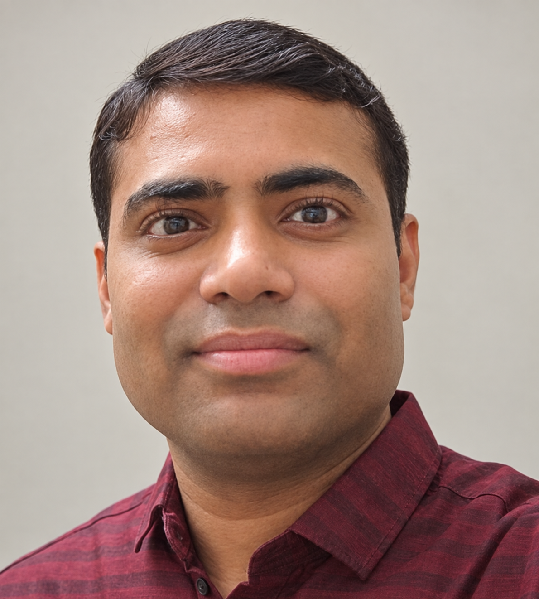

Causal graphical models
Counting and sampling causal structures compatible with observational data, background knowledge, and structural constraints.
Institute Postdoctoral Fellow · IIT Madras
I work on parameterized algorithms, graph algorithms, combinatorial optimization, and causal graphical models.

01
I am an Institute Postdoctoral Fellow in the Department of Computer Science and Engineering at IIT Madras, where I work with Dr. Akanksha Agrawal. I received my PhD in Computer Science from the Tata Institute of Fundamental Research, Mumbai, under the supervision of Prof. Piyush Srivastava. Before that, I completed my M.Tech. in Theoretical Computer Science at IIT Guwahati and my B.Tech. in Computer Science and Engineering at NIT Patna.
My doctoral research focused on exact and parameterized algorithms for counting Markov equivalent directed acyclic graphs. More broadly, I am interested in developing efficient algorithms for computational problems arising in graph theory, optimization, and causal inference.
02
My work connects structural graph theory with algorithm design, with a particular interest in exact and parameterized computation.
Counting and sampling causal structures compatible with observational data, background knowledge, and structural constraints.
Designing efficient algorithms by isolating the structural parameters that govern computational difficulty.
Combinatorial problems involving graph metrics, shortest cycles, contractions, cuts, and structured satisfiability.
03
J. Harviainen, P. Parviainen, and V. S. Sharma
42nd Conference on Uncertainty in Artificial Intelligence (UAI 2026), PMLR 337
V. S. Sharma
AAAI Conference on Artificial Intelligence
arXivV. S. Sharma
Conference on Uncertainty in Artificial Intelligence (UAI)
arXivD. Kesh and V. S. Sharma
Discrete Applied Mathematics 319, 132–140; extended abstract in CALDAM 2019
04
IIT Madras · Mentor: Dr. Akanksha Agrawal
Centre for IC&SR, IIT Madras · Parameterized Algorithmics–Tradition & Beyond
TIFR, Mumbai · Advisor: Prof. Piyush Srivastava
Thesis: Counting Problems in Graphical Models
IIT Guwahati · Advisor: Prof. Deepanjan Kesh
NIT Patna
05
University of Bergen, Norway, May–June 2025. Host: Prof. Fedor Fomin.
Microsoft Research Travel Grant and ACM India–IARCS Travel Grant for presenting at AAAI 2024 in Vancouver.
Guest lectures at IIT Madras; teaching assistance at IIT Guwahati; reviewer for Acta Informatica, AAAI, and NeurIPS.